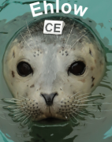
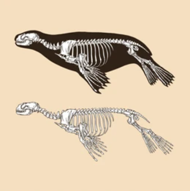

Rescue
A person called The Marine Mammal Center on 07/01/2020 and reported a seal at South Salmon Creek Beach not entering the water. He had mistakenly thought that this was an issue that he needed to solve and repeatedly pushed the animal into the water, against its will. This call let them fill out a Stranded Animal Report, to theorize what might have happened to the animal. The Marine Mammal Center got to the beach as soon as they could, and took Ehlow to The Marine Mammal Center for later diagnostics and treatment.

Diagnosis
Ehlow, a smaller male harbor seal weaner, was found to have no diseases (an extremely lucky outcome), but he was found to have a cut in his flipper with an abscess (damaging his muscoskeletal system), malnutrition, and seemed to be separated from his mother, perhaps from begin moved around by human interaction. He also was found to have a small cut in his mouth, but it was a minor issue.

Treatment
Ehlow was given all the food and water that he needed, and was back into the ocean in only a month!